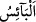
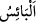
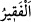

için (efdal) olandır. Aksi halde binitli olmak efdaldir.
Geçmiş milletlerde râhipler çeşitli beldelere ve vâdilere sefer ve seyahat ederek
kendilerini tecrîd ederlerdi. Rasûlullah (s.a.)’e bu durum sorulunca: “Allah onu hac ile
değiştirdi.” buyurdu. Allah haccı ve hac yolculuğunu onlar için ruhbanlık ve seyahat
kılarak O’nun ümmetine haccı lütfetti.
Bir haberde şöyle buyrulmuştur: “Allah her sene Şaban ayının ortasında Kâbe’ye
nazar eder. İşte o zaman kalbler ona meyleder.”[25] Bu tecellî sırasında ancak
İbrahim (a.s.)’ın çağrısına hemen icâbete koşan kalbler meyleder. Bu icâbete meyleden
bir kalb, ancak Allah’ın: “Ben sizin Rabbiniz değil miyim? (Onlar da), Evet,
dediler.” (el-A‘râf, 7/172) sözündeki Hakk’ın dâvetine icâbet eden kalbdir.
Hz. Şeyh-i Ekber (k.s.) der ki: “Âriflerden birisi bana dünyada servet sahibi bir
adamdan haber verdi. Bu kimse, haccetmeyi asla içinden bile geçirmemişti. Onun
başından bazı işler geçti ve hakkında yapılan bir şikâyet üzerine demir prangalara
vurulup öldürülmek üzere Mekke’nin sâhibi olan emîre getirildi. Onu ihbar eden emîrin
yanında hazır bulunuyordu. Adamın gelişi arefe gününe denk geldi. Emîr de o zaman
Arafat’ta idi. Adam boynunda prangalarla emîrin huzuruna getirildi. Emir ihbarda
bulunan adamı da çağırttı. Ona: “Adamımız bu mu?” diye sordu. O da adama baktı ve
“Hayır, ey emîr.” dedi. Bunun üzerine emir adamdan özür diledi. Bağlarını çözdürdü.
Adam gusletti. Arafat’ta hacca niyetlendi ve telbiye getirdi. Zâhiren ve bâtınen
afvedilmiş ve bağışlanmış olarak geri döndü.” İlâhî inâyetin kuluna ne ettiğine bir bak.
İnsanlardan öyleleri vardır ki zincirlerle cennete sevk edilir. İşte bu hâdise de İbrahim
(a.s.)’ın çağrısına icabetin esrârındadır.
Fütûhu’l-Harameyn’de der ki:
Ademden (yokluktan) vücûda (varlık âlemine) gelen herkes
Onun yolunda başını yerlere koydu
Kâbe yolunda fayda elde etmeyen
Ne bir nebî olmuştur ne de bir velî
Arap’tan Acem olanlara dek bütün yaratılmışlar,
Harem-i şerîf ’in arzusuyla çöller, sahralar kat’etmektedir
“Artık ondan hem kendiniz yeyin,” Burada hitâba geçiş (iltifât) vardır.
Kurbanlarınızın üzerine Allah’ın adını anın ve onların etinden yiyin, demektir. Buradaki
emir mübahlığı ifâde eder. Câhiliyye devri insanları kurbanlarının etlerinden
yemezlerdi. Allah bunun câiz olduğunu, dileyenin yiyebilceğini, dileyenin yemeyeceğini
bildirdi.
“Hem de yoksula, fakire yedirin.” Bu emir vücûb/zorunluluk ifâde eder. “
”
kendisine ihtiyaç/sıkıntı ve darlık isâbet eden, âciz kalan ve sıkıntı çeken kimse
demektir. “
” muhtaç, eli dar kimse demektir. Şu halde “
” çok fakir, “
” ise